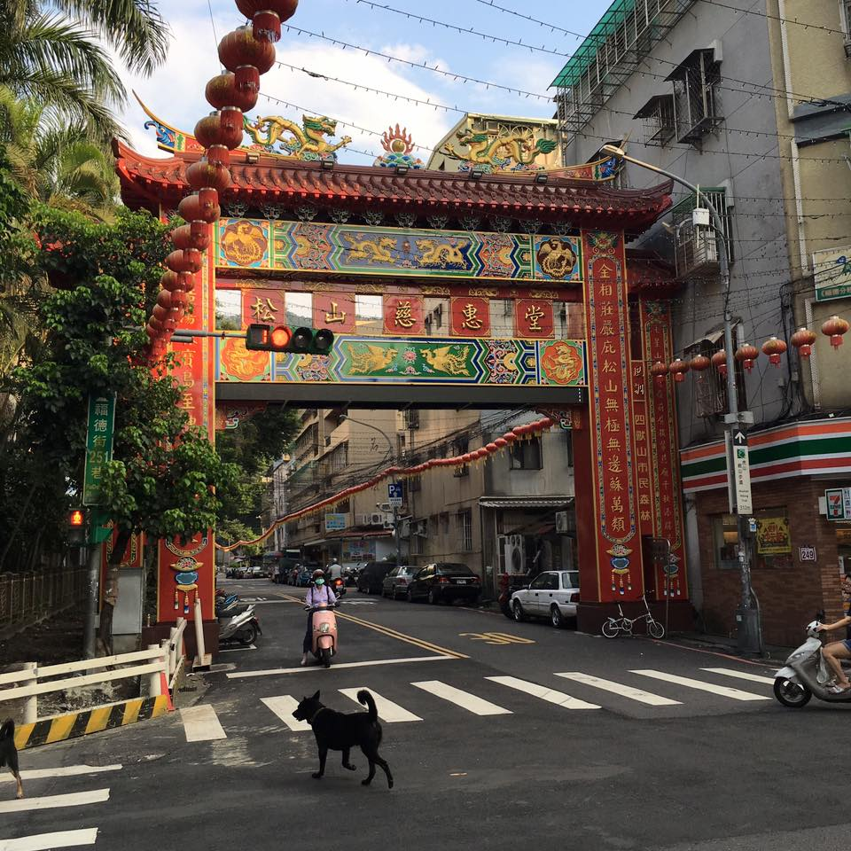
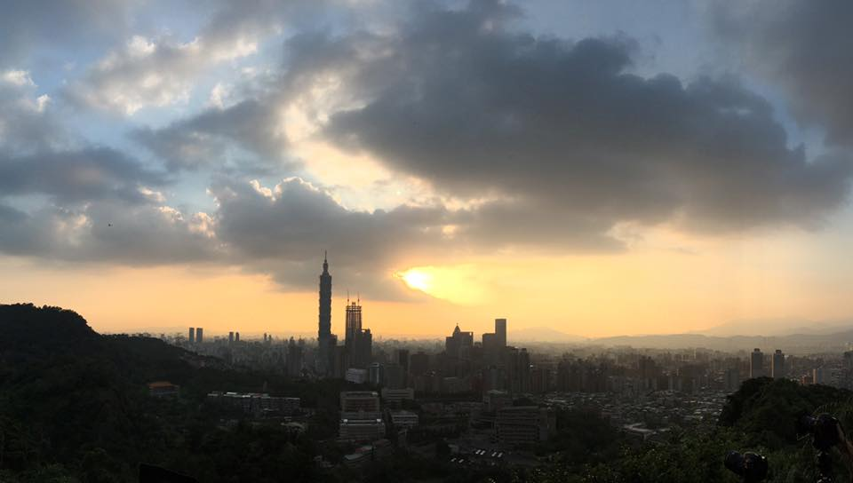
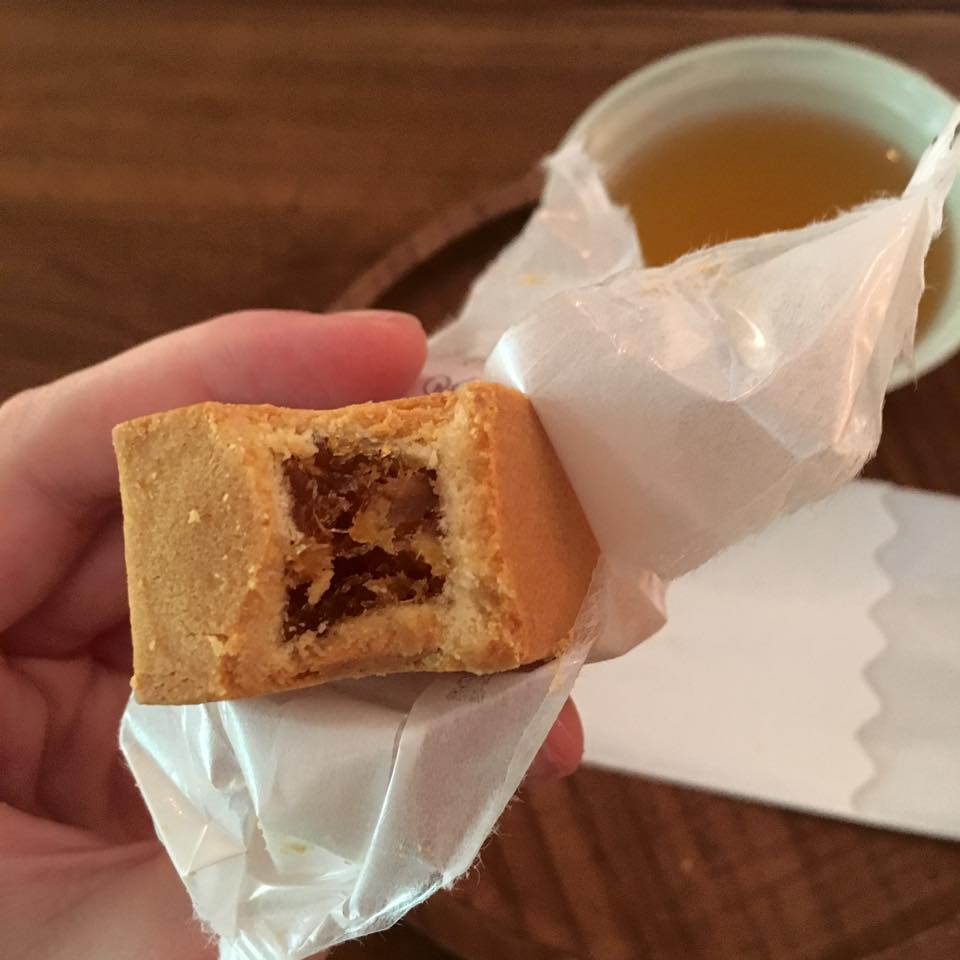
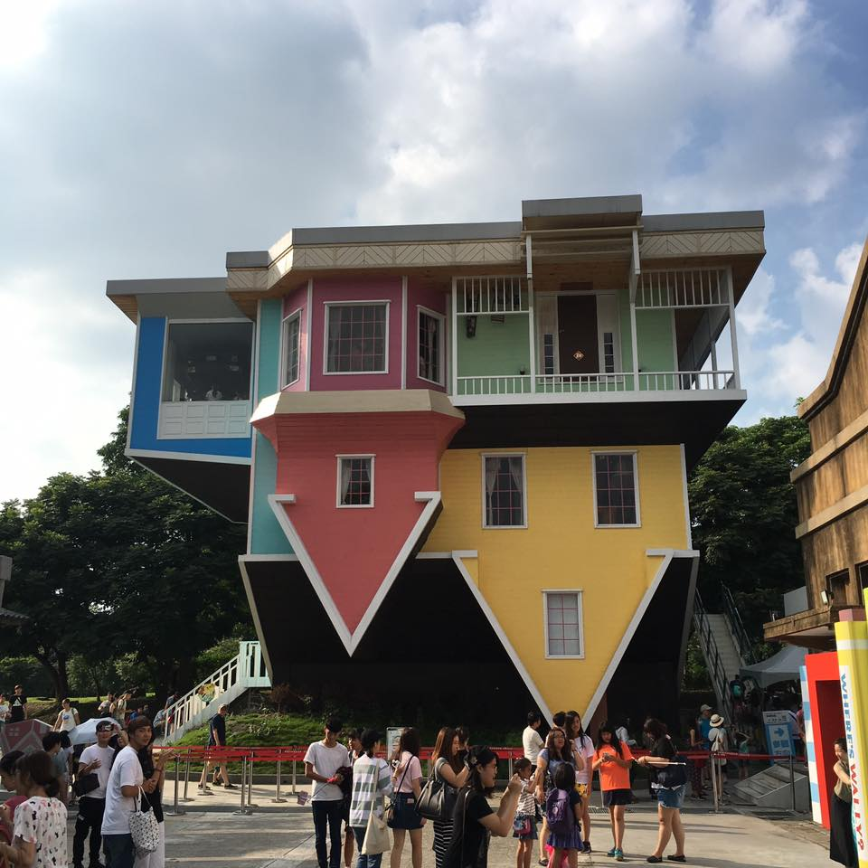
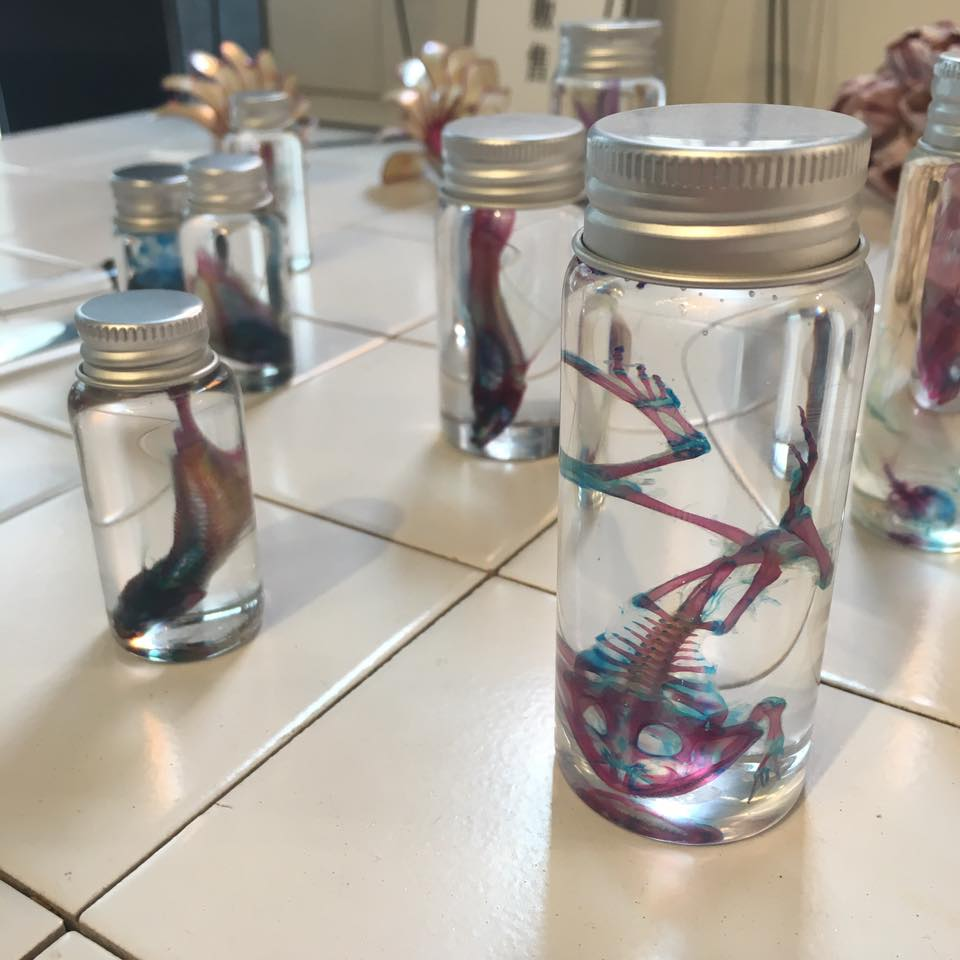
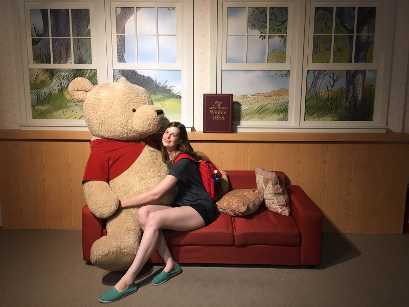
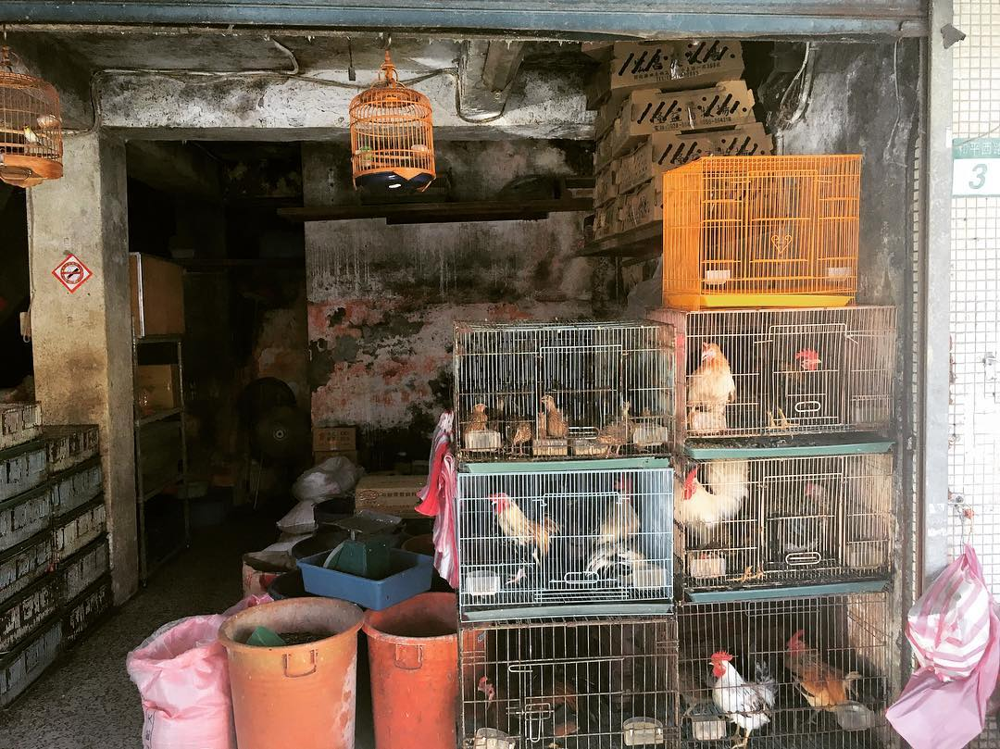

Tiger Mountain
Climbing Tiger Mountain was a lot harder than Elephant Mountain, but a lot more fun! There are quite a few ways to go up the mountain, and I went with a Taiwanese friend who led the group (so I don't know what path exactly we used), but we walked through a pretty cool traditional-looking area before going up the mountain.
The top had a beautiful view of Taipei, along with a group of photographers with their cameras set up. My iPhone photo doesn't do it justice! We sat at the top for a while before beginning the long trek down. Close-ish to the bottom of the mountain is the Raohe night market.
Sunny Hills
Taiwan is famous for its pineapple cake, and I still hadn't tried it, so I stopped at Sunny Hills one afternoon. When you show up, they give you a free cup of tea and pineapple cake. I didn't expect to want to buy some, but the cake was so good I decided before I leave for the states I'm returning to buy a few boxes to give my family and friends! The cake at Sunny Hills is made from real pineapple, while some of the other other cheaper pineapple cakes are made from cheaper filler fruit, according to my Chinese teacher anyways.
Huashan 1914 Creative Park
This is a really cool place to go if you like interesting artsy things. There were a bunch of cool (and expensive) shops selling neat items, from wooden toys, to books, to handmade crafts. There were also a few other exhibits (like this upside-down house we didn't actually go into) and a Hayao Miyazaki themed store.

Chiang Kai-shek Memorial Hall
Chiang Kai-shek Memorial Hall is a pretty cool monument in memory of Chiang Kai-shek, a former Taiwanese president. The outside has beautiful architecture with lots of symbolism. Inside is a giant statue and there were some men doing some sort of military drill.
There was also a museum inside as well as some seasonal exhibits. One of these exhibits was a Winnie the Pooh exhibition! It had some interesting historical objects about Winnie the Pooh, but also a bunch of life size plastic and plush Winnie the Pooh settings you could take pictures with. I went with some friends so we got some cute pictures. I might be 22 but I felt like a kid there. I used to watch Winnie the Pooh every day so I was really happy about this.
Bird Street
Hong Kong's bird market was one of my favorite places when I went last week. I didn't even know Taipei also had a bird market until some friends told me, so I had to check it out. Honestly, it wasn't as good as Hong Kong's bird market, but it was still cool to see all the (inhumane?) cages of birds. They had anything from parrots, to doves, to chickens. The street kindof smelled like a farm so it oddly reminded me of home.
A link to my full album of Taiwan photos can be found here. Keep checking back for weekly updates!
Questions? Comments? Don't hesitate to contact me!